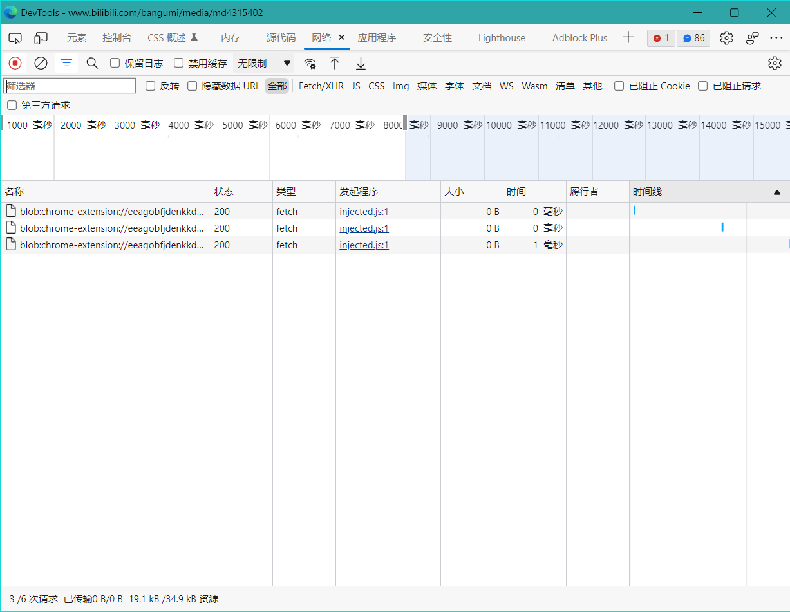
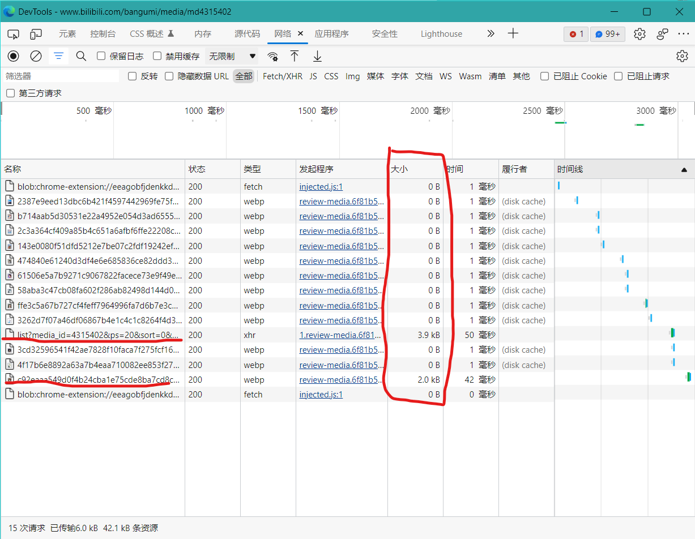
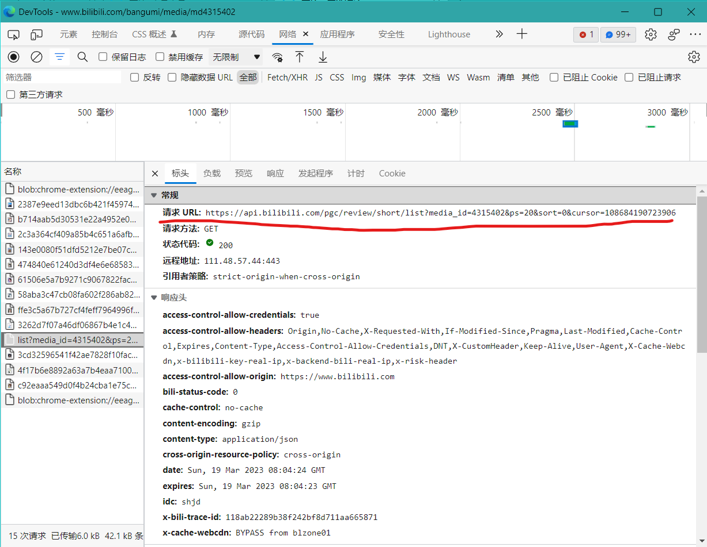
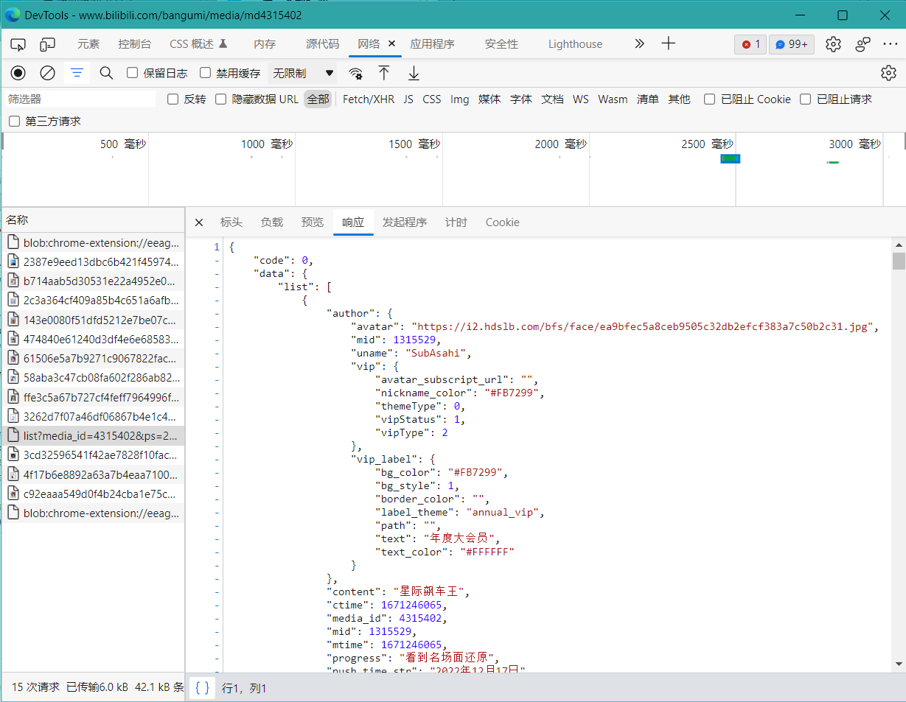
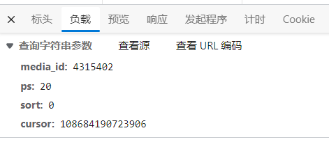
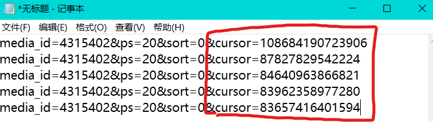
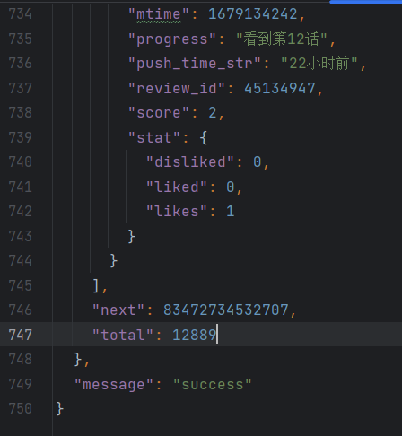
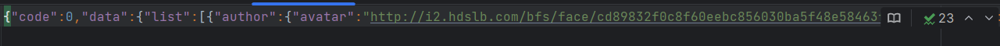
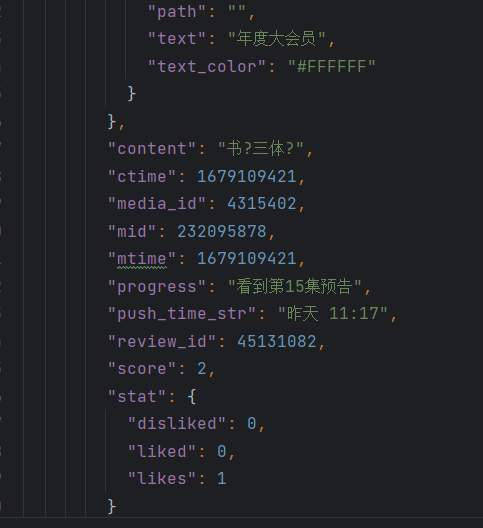
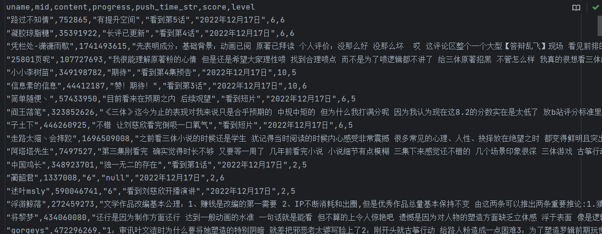

目录
首先需要明确目标 这次是对bilibili的三体评分进行分析，需要完成以下的数据图例展示
每个评分段与评分人等级间的关系
评分随集数的变化
评分随时间的变化
评分的总体情况
每集的评分占比
每集的评分人等级占比
评分人等级的总体分布
评分数量与时间的关系
评分量与集数的关系
分析bilibili评论加载js地址 首先进入bilibili三体番剧详情页：
然后观察，发现整个页面是动态加载，而非是静态加载，在滑到最底后发现进度条突然出现跳跃，但浏览器的url地址无任何改变：
可知bilibili评分是动态加载。
然后开始寻找真正的地址，首先，按F12打开控制台，找到网络：

在清除完冗余消息后再次滑动直到浏览器右侧进度条跳动：

仔细观察大小，发现可疑的消息有两个，但第二个的类型为webp（图片），肯定不是我们想要的，所以开始分析第一个：


结合响应，可以看出这就是我们想要的，然后开始观察这个js链接的参数（负载）：

有很多参数，结合部分英文，猜测它们的含义：
media_id：这个参数与浏览器的url地址中的md后数字一致，猜测可能是番剧的唯一标识
ps：看不出什么
sort：可能是排序方式
cursor：直译为“光标”，猜测可能是请求的开始位置或某个评论的唯一Id
然后继续分析，滑动更多次，分析共同点：

可以看到，随着页面不断下滑，负载中变化的只有cursor值，至此，可以知cursor是获取评论的重要变量，如果能获取cursor，就能得到评论链接。
但它似乎毫无规律，忽大忽小，看不出什么，但不要紧，先发个请求试试，看看会得到些什么：
1 2 3 4 5 6 7 8 9 10 11 12 13 import requestsurl = f'https://api.bilibili.com/pgc/review/short/list?' data = {'media_id' : 4315402 , 'ps' : '20' , 'sort' : '0' , 'cursor' : 83489914405152 } heads = { 'user-agent' : 'Mozilla/5.0 (Windows NT 10.0; Win64; x64) AppleWebKit/537.36 (KHTML, like Gecko) Chrome/110.0.0.0 Safari/537.36 Edg/110.0.1587.69' } score_data = requests.get(url=url, headers=heads, params=data) with open ('ex.json' , 'w' , encoding='utf-8' ) as f: f.write(score_data.content.decode())
是个json文件，这点从浏览器的响应部分可以看出，所以这里保存为json文件。
格式化后滑到最底，发现next存在：

猜测这可能就是我们需要的参数，将next作为参数填入，发出请求后响应成功：

可以看到，文件被改变了，然后格式化代码，检查响应结果是否是需要的：

看到progress，score等参数，能够明白这就是我们需要的数据。
至此，一切基本数据准备完毕，开始批量请求数据并保存到本地。
编写程序 战前准备 导入好多好多库：
1 2 3 4 5 6 import requestsimport jsonimport timeimport reimport threadingimport random
然后准备一些空数据池子和好多好多线程锁：
1 2 3 4 5 6 7 8 9 10 11 12 13 14 score = { 'score_num' : 0 , 'people_num' : 0 } start_time = time.time() ip_pool = [] run_web = [] up_ip = 0 up_ip_wait = threading.Event() ip_lock = threading.Lock() time_lock = threading.Lock() save_lock = threading.Lock() score_lock = threading.Lock() judgment_lock = threading.Lock()
主函数 这是一个url地址：
https://api.bilibili.com/pgc/review/short/list?media_id=4315402&ps=20&sort=0&cursor=83472734532707
仔细分析链接和响应内容可以看到更多的内容
media_id：番剧唯一id
ps：每次请求评论数量
sort：评论排序方式，0代表热度，1代表时间
short：代表长评或短评
同时能注意到，这个响应的模式是接受到数据，然后产生新的数据影响下一次请求，这是一个典型的递归。
并且研究链接返回的json数据后发现没有用户等级，所以需要另外请求。
所以这样写：
1 2 3 4 5 6 7 8 9 10 11 12 13 14 15 16 17 18 19 20 21 22 23 24 25 26 27 28 29 30 31 32 33 34 35 36 37 38 39 40 41 42 43 def requests_first (name_id, mode, cursor=None ): up_ip_wait.wait() url = f'https://api.bilibili.com/pgc/review/{mode} /list?' if cursor is None : data = {'media_id' : name_id, 'ps' : '20' , 'sort' : '0' } else : data = {'media_id' : name_id, 'ps' : '20' , 'sort' : '0' , 'cursor' : cursor} heads = { 'user-agent' : 'Mozilla/5.0 (Windows NT 10.0; Win64; x64) AppleWebKit/537.36 (KHTML, like Gecko) Chrome/110.0.0.0 Safari/537.36 Edg/110.0.1587.69' } ip = get_ip_pool() if ip is None : requests_first(name_id, mode, cursor) posix = {'https' : f'http://{ip} ' } try : score_data = requests.get(url=url, headers=heads, params=data, proxies=posix, timeout=10 ) add_data(json.loads(score_data.text)) save_csv(score_data) print (f'第{score["people_num" ]} 个评分爬取开始' ) if not int (json.loads(score_data.text)['data' ]['next' ]) == 0 : cursor_num = json.loads(score_data.text)['data' ]['next' ] requests_first(name_id, mode, cursor_num) else : if mode == 'short' : print ('全部短评爬取完毕' ) elif mode == 'long' : print ('全部长评爬取完毕' ) except : print (f'打开\n{url} \n失败' ) print (f'{ip} 已删除' ) if ip in ip_pool and ip is not None : ip_lock.acquire() ip_pool.remove(ip) ip_lock.release() requests_first(name_id, mode, cursor)
简单解释这个函数：
首先，它会接受一些参数，分别是：
name_id：番剧id
mode：请求的评论是长评还是短评
cursor：之前分析过的下个请求链接的参数，在评论的第一页可以不要这个参数
然后，调用get_ip_pool()函数获得一个ip，并将这些参数用来构建完整的请求。
之后，它会分析响应的数据，如果next不是0，就代表评论还没爬取完毕。然后将调用add_data函数（统计数据）和save_csv函数，（这个函数的功能是访问每个评论人的mid并寻找其等级，然后将全部数据保存到本地）接着，传入请求到的评论参数。
调用自己，开始下一次请求。
在其中，如果打开网页失败，则删除此ip并使用相同的参数调用自己，保证请求不会中断。
寻找用户等级并保存数据到本地 save_csv函数： 1 2 3 4 5 6 7 8 9 def save_csv (data, encoding='utf8' ): save_score_data = json.loads(data.content.decode(encoding))['data' ]['list' ] for save_data in save_score_data: save_work = threading.Thread(target=save_level_data, args=(save_data, encoding)) save_work.start() global run_web run_web.append(save_work)
简单解释：
首先，它接受data（数据）和encoding（编码方式）
然后它将对data数据进行基本的处理，然后开启新的线程，在新的线程中调用save_level_data函数，并将处理过的数据和编码方式传给该函数。同时将此线程保存进run_web列表里，便于之后结束全部线程。
save_level_data函数： 1 2 3 4 5 6 7 8 9 10 def save_level_data (save_data, encoding ): with open ('3body_score_data.csv' , 'a' , encoding=encoding) as f: if 'progress' not in save_data: save_data["progress" ] = 'null' level = get_level(save_data["author" ]["mid" ]) new_content = displace_content(save_data["content" ]) save_lock.acquire() f.write(f'\"{save_data["author" ]["uname" ]} \",{save_data["author" ]["mid" ]} ,\"{new_content} \",\"{save_data["progress" ]} \",\"{save_data["push_time_str" ]} \",{save_data["score" ]} ,{level} \n' ) save_lock.release()
简单解释：
首先它接受save_data（数据）和encoding（编码方式）
然后它将打开3body_score_data.csv文件，并调用get_level函数得到用户等级。
在然后调用displace_content对评论进行处理，防止破坏存储数据结构（比如"）。
最后将各种数据以“a”（追加模式）填入3body_score_data.csv文件。
get_level函数 1 2 3 4 5 6 7 8 9 10 11 12 13 14 15 16 17 18 19 20 21 22 23 24 25 26 27 28 def get_level (mid ): up_ip_wait.wait() url = f'https://m.bilibili.com/space/{mid} ' heads = { 'user-agent' : 'Mozilla/5.0 (Linux; Android 6.0; Nexus 5 Build/MRA58N) AppleWebKit/537.36 (KHTML, like Gecko) Chrome/110.0.0.0 Mobile Safari/537.36 Edg/110.0.1587.69' } ip = get_ip_pool() if ip is None : get_level(mid) posix = {'https' : f'http://{ip} ' } try : data = requests.get(url=url, headers=heads, proxies=posix, timeout=10 ) web_content = data.content.decode('utf8' ) try : level = re.findall(r'class=\"iconfont ic_userlevel_(\d)\"' , web_content)[0 ] except IndexError: level = 0 print (f'mid为；{mid} 的用户信息获取完毕' ) return level except : print (f'获取mid为：{mid} 的用户信息失败' ) print (f'{ip} 已删除' ) if ip in ip_pool and ip is not None : ip_lock.acquire() ip_pool.remove(ip) ip_lock.release() get_level(mid)
简答解释：
基本原理和主函数相同，接受一个用户id，请求一个ip，返回一个用户等级。
具体的寻找用户等级的过程略过。
displace_content函数 1 2 3 4 5 6 7 8 9 def displace_content (content ): new_content = content.replace('，' , ' ' ) new_content = new_content.replace('\'' , ' ' ) new_content = new_content.replace('\"' , ' ' ) new_content = new_content.replace('?' , ' ' ) new_content = new_content.replace('？' , ' ' ) new_content = new_content.replace('。' , ' ' ) new_content = new_content.replace('!' , ' ' ) return new_content
不用多介绍，全是替换。接受一个文本，然后返回处理好的文本。
ip池相关 get_ip_pool函数 1 2 3 4 5 6 7 8 9 10 11 12 13 14 15 16 def get_ip_pool (): up_ip_wait.wait() now_time = time.time() time_lock.acquire() global ip_pool global start_time global up_ip if now_time-start_time > 290 or ip_pool == []: print ('超时，开始重新获取ip' ) time_lock.release() up_ip += 1 judgment_up_ip() start_time = time.time() if time_lock.locked(): time_lock.release() return sort_ip_pool()
简单介绍：
查看up_ip_wait的状态，如果为“未设置”，这将阻滞程序。
然后开始计时now_time = time.time()并申请一把“时间锁（线程锁）”
使用一大堆公共变量，然后开始判断，如果距离上一次申请ip的时间达到了290秒或者ip池空了就调用judgment_up_ip()函数（重新填充ip池）。
释放锁，并返回sort_ip_pool()函数（这个函数会返回一个Ip）
judgment_up_ip函数 1 2 3 4 5 6 7 8 9 10 11 def judgment_up_ip (): judgment_lock.acquire() time.sleep(random.randint(1 , 3 )) global up_ip if up_ip >= 1 : up_ip_wait.clear() response_ip() up_ip = 0 judgment_lock.release() print ('判断结束' )
这是专门用来判断是否应该更新ip池的函数。如果没有这个函数，在遇到了多个线程同时请求更新ip池，就会几乎无限地更新ip池，所以专门用函数来判断是否应该更新ip池。
简单介绍：
首先，申请判断锁，然后随机休眠几秒叉开程序间的时间，防止同时进入该函数，和不停申请更新ip池。
然后使用公共变量up_ip，这是一个指标，每次当有线程或其他想要更新ip池时该值就会加一。如果指标大于1，则释放锁并将up_ip_wait的状态设置为“未设置”，然后调用response_ip()函数，更新ip池。同时将up_ip值设为0。
最后释放判断锁并给出提示信息。
response_ip函数 1 2 3 4 5 6 7 8 9 10 11 12 13 14 15 16 17 18 19 20 21 def response_ip (): ip_lock.acquire() time.sleep(random.randint(1 , 3 )) url = 'http://xxxxxx' global ip_pool ip_pool = [] ip_data = requests.get(url=url) for ip in ip_data.text.splitlines(): posix = {'https' : f'http://{ip} ' } try : requests.get('https://www.bilibili.com/' , proxies=posix, timeout=0.5 ) print (f'{ip} 可用' ) ip_pool.append(ip) except : print (f'{ip} 不可用' ) continue ip_lock.release() up_ip_wait.set () print ('一轮ip更新已完成' )
简单解释：
首先申请ip锁
在得到请求的ip后开始判断，如果这个Ip能在0.5秒内返回结果，就认为这个ip是可用的并加入ip_pool，否则就跳过。
最后释放ip锁，并将up_ip_wait变量的状态改为“设置”
sort_ip_pool函数 1 2 3 4 5 6 7 8 9 10 11 12 13 14 15 16 17 def sort_ip_pool (): up_ip_wait.wait() ip_lock.acquire() global ip_pool global up_ip if not ip_pool == []: ex = ip_pool.pop(0 ) ip_pool.append(ex) ip_lock.release() return ex else : print ('无可用ip，正在重新请求' ) ip_lock.release() up_ip += 1 judgment_up_ip() sort_ip_pool()
动态处理ip池,返回第一个值，同时将该值置于末尾，这样一来就不会导致总是使用同一个ip了。
简单介绍：
判断up_ip_wait是否该等待，然后申请ip锁
使用公共变量并判读ip池是否是空，如果是，就释放ip锁然后重新调用自己。如果不是，那就返回开头的Ip并将其置于尾部。
本地文件处理 up_local_scv函数 1 2 3 4 5 6 7 8 9 10 11 12 13 14 15 16 17 18 19 20 21 22 23 24 25 26 27 28 29 def up_local_scv (name ): num = 0 err_num = 0 with open (name, 'rb' ) as f: line_list = f.readlines() for line in line_list: num += 1 try : line.decode() except UnicodeDecodeError: err_num += 1 print (str (num)) line_list.pop(num - 1 ) print ('删除含有非utf8字符段结束' ) print (f'共计{err_num} 个' ) new_line_list = [] for line in line_list: try : text = line.decode() if not text.isspace(): text = text.strip() text = text.lstrip() text = text.rstrip() new_line_list.append(text) except UnicodeDecodeError: print (str (num)) with open (name, 'w' , encoding='utf-8' ) as f: f.write('\n' .join(new_line_list)) print ('更新csv文件完成' )
这是用来处理哪些编码不对的数据的函数。
不知道为什么，某些字符的编码并不是utf-8，虽然不多，但却会导致整个文件坏死无法读出，所以特地准备函数来处理。
并不难，如果能看懂其他函数，那这个是肯定没有问题的，这是十分基础的部分。
开始程序 1 2 3 4 5 6 7 8 9 10 11 12 13 14 15 16 17 18 if __name__ == '__main__' : response_ip() short_score = threading.Thread(target=requests_first, args=(4315402 , 'short' )) short_score.start() run_web.append(short_score) long_score = threading.Thread(target=requests_first, args=(4315402 , 'long' )) long_score.start() run_web.append(long_score) for work in run_web: work.join() average_score = score['score_num' ] / score['people_num' ] print (f'平均分为{average_score} ' ) up_local_scv('3body_score_data.csv' )
同时开始长短评爬取，然后等待子线程结束并计算平均分。
基础功能完成，但还有特别重要的一点，绝对不能忘：
加上铃仙 1 2 3 4 5 6 7 8 9 10 11 12 13 14 15 16 17 18 19 ''' く__,.ヘヽ. / ,ー､ 〉 ＼ ', !-─‐-i / /´ ／｀ｰ' L/／｀ヽ､ / ／, /| , , ', ｲ / /-‐/ ｉ L_ ﾊ ヽ! i ﾚ ﾍ 7ｲ｀ﾄ ﾚ'ｧ-ﾄ､!ハ| | !,/7 '0' ´0iソ| | |.从" _ ,,,, / |./ | ﾚ'| i＞.､,,__ _,.イ / .i | ﾚ'| | / k_７_/ﾚ'ヽ, ﾊ. | | |/i 〈|/ i,.ﾍ | i| .|/ / ｉ： ﾍ! ＼| kヽ>､ﾊ _,.ﾍ､ /､! !'〈//｀Ｔ´', ＼ ｀'7'ｰr' ﾚ'ヽL__|___i,___,ンﾚ|ノ ﾄ-,/ |___./ 'ｰ' !_,.: '''
等待程序后可以得到我们需要的数据：
